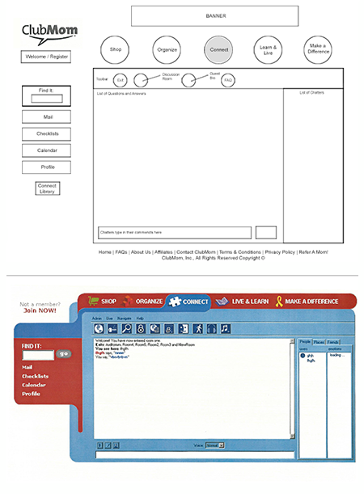

Work
CMS workflows, functional specifications, use cases, user flows, and technical project management.
Areas
Career detail · ClubMom
I managed the implementation of Interwoven TeamSite for an editorial organization with more than thirty editors and hundreds of contributors. The role combined functional specifications, use cases, user flows, high-level wireframes, technical oversight, and public-facing interaction design.
CMS workflows, functional specifications, use cases, user flows, and technical project management.
Interwoven TeamSite implementation for an editorial organization with more than thirty editors and hundreds of contributors.
Featured artifact · celebrity chat
This artifact shows the development of a chat application in which members could submit questions to a celebrity. My role was primarily technical project management (TPM), coordinating the work from early wireframes and documentation through user flows and the final skinned interface.
The challenge extended beyond the interface. Chat rooms were becoming popular, but AOL Instant Messenger was still new, and multi-user chat was unfamiliar to many people. The experience needed to guide members into the conversation, show them where to submit questions, explain queueing and moderation, and make it clear they could leave and return to the ongoing chat.

The interface needed to introduce instant messaging concepts to people who may never have used any form of IM before.
Users had to be led into the celebrity chat, shown where to ask questions, and reassured that questions were being queued or merged by moderators.
In addition to the public experience, the system also had to account for multiple celebrity users and numerous moderators.
Career shift
The role combined functional specifications, use cases, user flows, high-level wireframes, and technical oversight.
Continue through the chronological portfolio.